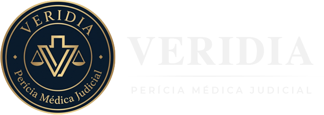
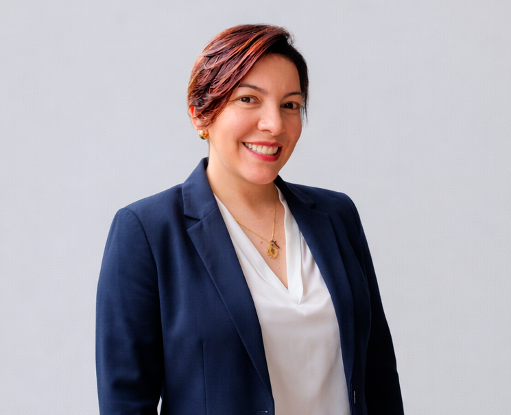

Onde a verdade encontra expertise e acolhimento
Na Veridia, unimos ciência médica e justiça com ética, brilho e precisão técnica. Nosso compromisso é trazer humanidade com licitude — oferecendo perícias médicas que refletem credibilidade e expertise.
A Veridia Perícias Médicas atua com seriedade e dedicação. Nosso diferencial está em unir expertise técnica com acolhimento humano, garantindo que cada caso seja tratado com rigor científico e sensibilidade.
Atuamos em processos cível, previdenciário, acidentário, administrativo e criminal, com assessoria técnica completa do início ao julgamento.
Fale com a equipeValores que nos guiam
Do primeiro contato ao resultado final — suporte técnico completo em cada etapa
Você nos apresenta o caso pelo WhatsApp ou e-mail. Avaliamos a situação e confirmamos os próximos passos com agilidade.
Revisamos toda a documentação médica e jurídica, identificando pontos críticos, oportunidades técnicas e fragilidades.
Produzimos o laudo, parecer ou impugnação com fundamentação científica sólida e linguagem acessível ao mundo jurídico.
Permanecemos ao lado do advogado e da parte — esclarecendo dúvidas, reforçando argumentos até o julgamento final.
Atendemos urgências processuais · Assistência técnica particular e consultorias
Análise detalhada norteada pela medicina baseada em evidências, com linguagem clara e argumentativa — produzido para ser compreendido tanto pelo juízo quanto pelas partes.
Laudos técnicos imparciais que esclarecem fatos médicos ao jurídico requisitante, com fundamentação científica sólida e linguagem acessível ao universo do direito.
Leitura criteriosa do processo com contestação baseada naquilo que consta nos autos e na literatura médica nacional e internacional — identificando falhas técnicas com precisão.
Acompanhamento técnico médico ao lado do advogado em todas as fases do processo — elaboração de quesitos, análise de laudos e presença no exame pericial.
Apoio estratégico na construção da inicial e ao longo do processo jurídico, com acompanhamento online ou presencial — garantindo coerência entre base médica e tese jurídica.
Análise prévia da consistência clínica antes do ajuizamento ou contestação — identificando riscos, pontos fortes e fragilidades para decisões processuais mais seguras.

"Cada processo carrega uma história real. Meu compromisso é que essa história seja contada com precisão científica e com a humanidade que cada caso merece."
— Dra. TinaMédica do Trabalho · Especialista em Perícias Médicas
Atuando há 20 anos, com experiência consolidada como Assistente Técnica da União em mais de 1.000 casos de alta complexidade.
Falar com a Dra. Tina"A Veridia trouxe clareza e justiça ao meu processo. O suporte técnico foi decisivo para o resultado favorável."
"Profissionalismo e humanidade em cada detalhe. A Dra. Tina entendeu o caso profundamente e construiu um parecer impecável."
"A qualidade técnica e a forma clara de apresentar as informações elevaram completamente a argumentação do meu processo."
É o suporte técnico de um médico especialista ao lado do advogado ou da parte, para analisar laudos, elaborar quesitos, acompanhar o exame pericial e produzir pareceres que fortalecem a argumentação jurídica com base científica.
O quanto antes, de preferência antes do ajuizamento da ação ou logo que for intimado de uma perícia. A atuação precoce permite planejar melhor a estratégia, elaborar quesitos adequados e evitar surpresas no exame pericial.
Sim. Atendemos em todo o território nacional, com atendimento online ou presencial conforme a necessidade do caso.
Sim. A Veridia atende urgências processuais com prazos judiciais em vista — entre em contato imediatamente pelo WhatsApp para avaliarmos seu caso.
Atuamos em processos cível, previdenciário, acidentário, administrativo e criminal que envolvam questões médicas, incluindo INSS, erro médico, concursos públicos, medicamentos de alto custo, doenças raras, danos morais e estéticos, entre outros.
Oferecemos apoio estratégico desde a construção da inicial, com análise da documentação clínica, identificação dos pontos técnicos relevantes, formulação de quesitos e acompanhamento ao longo de todo o processo — online ou presencialmente.
Cada caso traz consigo sua própria complexidade.
Uma análise pericial criteriosa é o que ilumina o caminho, oferecendo clareza e segurança para decisões justas e bem fundamentadas.
Descubra como podemos ajudar no seu processo.